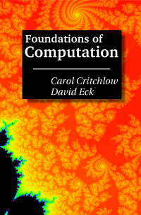

|  |
Foundations of Computation is a free textbook for a one-semester course in theoretical computer science. It has been used for several years in a course at Hobart and William Smith Colleges. The course has no prerequisites other than introductory computer programming. The first half of the course covers material on logic, sets, and functions that would often be taught in a course in discrete mathematics. The second part covers material on automata, formal languages, and grammar that would ordinarily be encountered in an upper level course in theoretical computer science. Version 2.3 (Summer 2010) added a section on pushdown automata; aside from that, there were only minor corrections and changes. The most recent version, 2.3.1 (Summer 2011), is a very minor update, with one new proof and a few corrections. In December 2016, the license under which the book is released was changed; the version number was changed to 2.3.2, but 2.3.2 is identical to 2.3.1 except for the new license. In June 2020, new versions of the PDF files were posted, with internal links, and a link was added to the version at LibreTexts. Table of Contents:
Foundations Of Computation is available in two free PDF versions, with different page sizes. See the links at the bottom of this page to access the PDFs. A printed version can be ordered from lulu.com for the cost of reproduction plus shipping. Readers are also welcome to print out the PDF themselves. The book can be freely redistributed in unmodified form for non-commercial purposes. This applies to the entire book, as well as to parts of the book, provided that proper attribution to the authors is given. This work is licensed under a (The image on the left is the cover of the print version of the book. The background image is a visualization of a small piece of the famous Mandelbrot set, which has nothing to do with the content of the book — except for the fact that the Mandelbrot set is an example of a complicated and beautiful structure produced by very simple computational means. The region of the xy-plane that is shown on the cover is approximately 0.35471950 < x < 0.35473217 and 0.09540064 < y < 0.09542001). The Authors:
Carol Critchlow (critchlo@hws.edu) Click here for the PDF versions:
An HTML version of the book (which was not prepared by the authors) can be found at LibreTexts. A Zip archive of the full source code is alsp available through the following link The source is written for the LaTeX typesetting program, with figures created by several different programs. The source was not designed for publication and will be useful only to a very small audience. It is provided as-is for people interested in making modified versions of the book. Note that any modified version that is distributed beyond its maker must be released under the same Creative Commons, Non-commercial, Share-alike license as the original. |